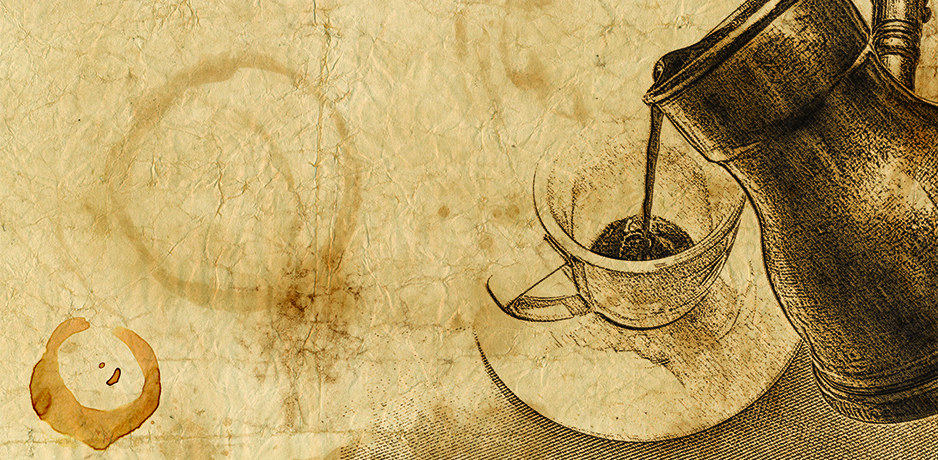

Na, gal nebuvo labai įdomu visa ta kavos istorija, bet svarbiausias mano tikslas buvo jums priminti apie šį nuostabų žmonijos išradimą, kuris dabar mums padeda išgyventi šioje sunkioje mūsų kasdienybėje
O dabar įdomūs patarimai kalbant apie kavą:
- Gerkite kavą prieš pat miegą: Taip sapnuosite daug greičiau, o sapnai bus veiksmo filmo formato.
- Kramtykite sausas kavos pupeles kaip riešutus ir užsigerkite verdančiu vandeniu, kad sutaupytumėte laiko ruošiant gėrimą.
- Laikykite kavą šaldiklyje šalia žuvies: Pupelės puikiai sugeria aplinkos kvapus, todėl kiekvienas rytas nustebins vis nauju, egzotišku jūros gėrybių aromatu.
